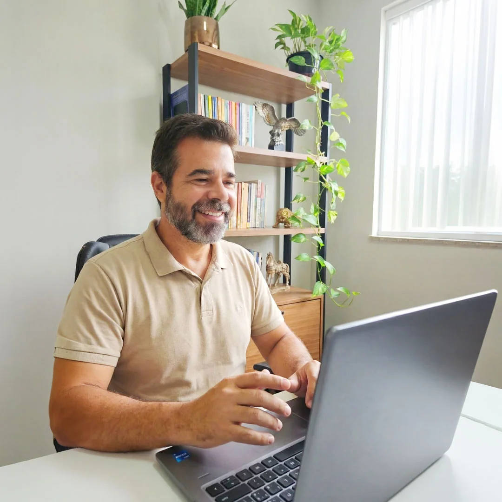
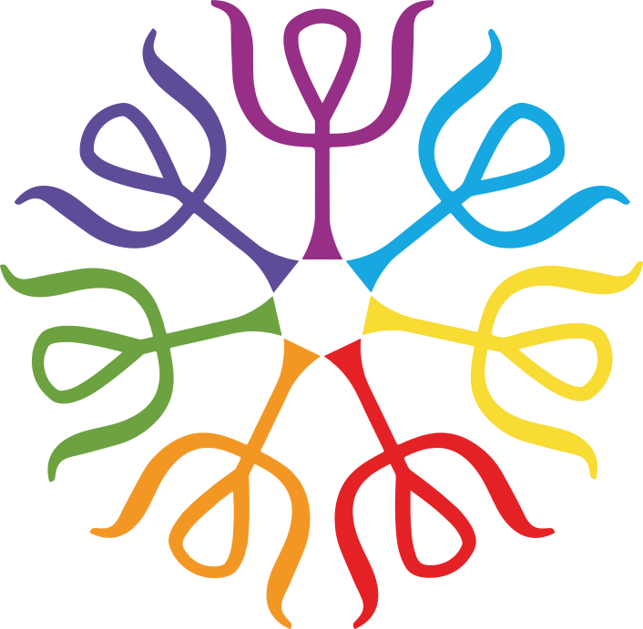

Teoria, fases e aplicação clínica
Uma imersão no conceito central da Gestalt-Terapia: o Ciclo do Contato e suas fases, bloqueios, interrupções e possibilidades de manejo clínico.
O Ciclo do Contato é a base da compreensão clínica em Gestalt-Terapia. Neste minicurso, exploramos cada fase do ciclo e como as interrupções nessas fases se manifestam na experiência do cliente.
Compreender o ciclo é compreender como o sujeito se organiza na relação com o mundo: onde se interrompe, onde se fixa, onde não consegue avançar. Este minicurso oferece uma leitura teórica rigorosa aliada à prática clínica, com exemplos e estratégias de intervenção.
R$ 0,00Oito eixos que constroem uma compreensão clínica integrada do Ciclo do Contato — da teoria às estratégias de intervenção.
Psicólogos clínicos que trabalham com Gestalt-Terapia e desejam aprofundar a compreensão do ciclo do contato na prática
Estudantes de Psicologia interessados em compreender um dos conceitos mais importantes da Gestalt-Terapia
Profissionais de outras abordagens que buscam ferramentas de leitura processual para enriquecer sua prática clínica
Qualquer profissional da saúde mental que queira compreender como o sujeito se organiza na relação com o mundo
Ao vivo via Zoom, com transmissão em tempo real. A gravação fica disponível por 30 dias após a compra para rever quantas vezes quiser.
Assista pelo computador, celular ou televisão, através do aplicativo da Hotmart. Você escolhe o dispositivo mais confortável.
São 4 horas de conteúdo com transmissão ao vivo e acesso à gravação posterior para rever quantas vezes quiser.
Apostila com conceitos-chave, esquemas e reflexões, slides da aula e acesso exclusivo à inteligência artificial Fritz, programada para responder dúvidas com base no conteúdo do minicurso.
Assista às aulas ao vivo ou no momento que preferir. O conteúdo pode ser acessado por computador, tablet, smartphone ou TV.
Ao completar a carga horária do minicurso, você poderá emitir seu Certificado de Conclusão, validando sua participação.


Marcelo Gomes, CRP 04/23858, é psicoterapeuta, professor e supervisor clínico com mais de 20 anos de experiência. Psicólogo formado pela UFMG, é especialista em Filosofia (UFMG) e em Psicologia Clínica Existencial e Gestáltica (FEAD), além de mestre em Psicologia pela PUC Minas.
Atuou como professor na UFMG, PUC Minas e Universidade Fumec. Atualmente, coordena atendimentos, supervisões e formações em Gestalt-Terapia no Instituto Mineiro de Gestalt-Terapia (IMGT), onde é professor titular e supervisor clínico.
O minicurso sobre o Ciclo do Contato trouxe uma clareza que eu não tinha na formação. A forma como o professor Marcelo conecta teoria e clínica é excepcional.
Finalmente entendi os mecanismos de interrupção de uma forma que faz sentido na prática. O conteúdo sobre ajustamento criativo mudou minha forma de olhar para os bloqueios do cliente.
O professor Marcelo tem uma capacidade rara de tornar conceitos complexos acessíveis. Saí do minicurso com ferramentas concretas para aplicar na clínica desde o dia seguinte.
Quatro horas de conteúdo ao vivo com Marcelo Gomes — teoria, fases do ciclo, mecanismos de interrupção e manejo clínico.